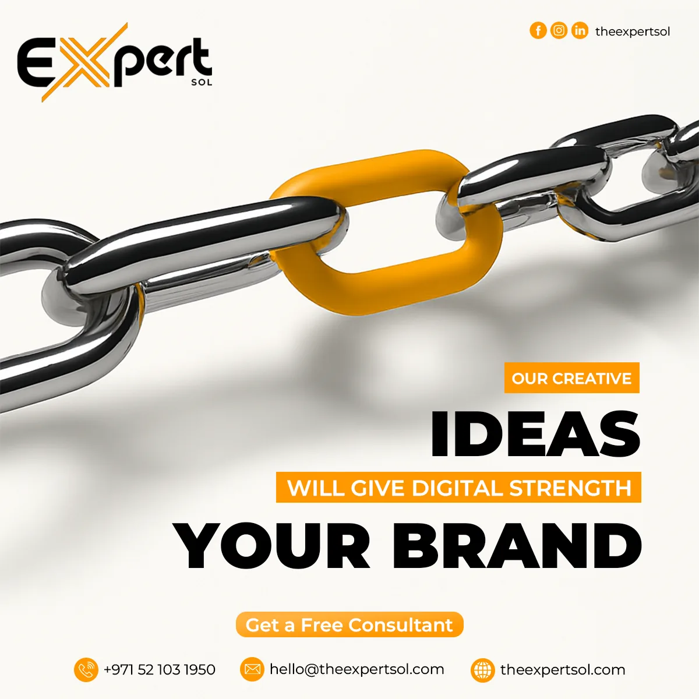
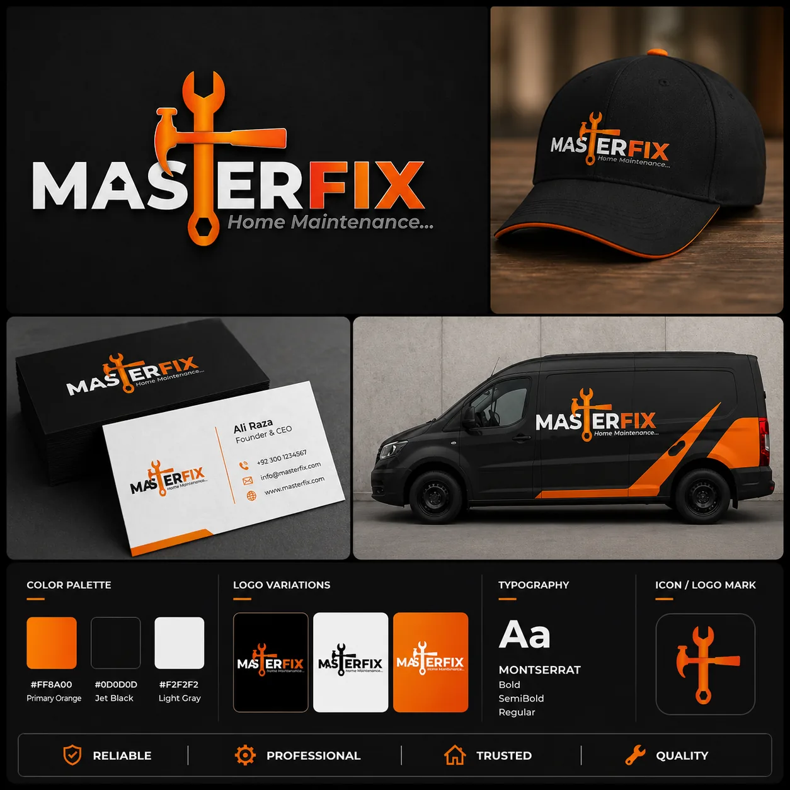

Strategy + Management
Research, content pillars, calendars, creative briefs, publishing, campaign support and content review.
Graphic Designer · Social Media Manager
I create brand visuals, social media content and campaign systems — from planning and creative direction to design, reels and publishing-ready execution.

01 / Professional snapshot
My work combines design and social media execution. I can take a business message, organize it into content, build the visual direction and adapt it across the formats a brand actually uses.
Research, content pillars, calendars, creative briefs, publishing, campaign support and content review.
Social creatives, brand identity, company profiles, marketing collateral, print and outdoor communication.
Campaign concepts, message hierarchy, visual consistency and platform-aware creative adaptation.
Posts, carousels, ad creatives, reels, short-form video and presentation-ready campaign assets.
02 / Selected case studies
Each project is organized around the communication goal, creative approach, deliverables and final work — so the thinking is visible alongside the design.

Brand communication across social content, corporate profile, marketing material and reels.

Service-led social content designed as one recognizable visual system.

Clear promotional content for digital services with consistent brand cues.

A connected packaging family built around recognition and product clarity.

Premium editorial art direction adapted into campaign visuals.

Selected identity directions showing range in marks and brand presentation.
03 / Social media workflow
A strong social presence is more than designing posts. The workflow connects research, content planning, creative production, publishing and continuous improvement.
Brand, audience, competitors, offers and platform behavior.
Content pillars, campaign themes, formats and posting rhythm.
Hooks, captions, CTAs, message hierarchy and creative briefs.
Static posts, carousels, campaign variations and reels.
Format adaptation, scheduling, uploads and campaign execution.
Review content performance and refine future creative decisions.
04 / Social creative archive
Selected social designs are shown at feed scale. Open a case study to view the full project, supporting context and larger artwork.
05 / About Abdul
I’m Abdul Rauf, a Graphic Designer with 2.5 years of experience and 1+ year of hands-on Social Media experience. I work at the point where visual design, content and marketing communication meet.
My focus is practical creative work for real brands: social media systems, campaign visuals, identity, packaging, company profiles, marketing material and short-form content. I aim to make every piece clear, consistent and useful for the platform it is designed for.
06 / Available for roles
I work across visual design, social media execution and e-commerce creative support. These are the roles and responsibilities I can handle professionally.
I create visual communication for digital, print and brand use — from everyday social content to complete campaign and identity assets.
I can manage the social workflow from content planning and creative production through publishing, campaign execution and lead generation.
I can support an Etsy store with product-focused creative work and day-to-day listing organization so the shop stays clear, consistent and presentation-ready.
07 / Contact
For job opportunities, freelance projects or creative collaborations, contact me directly by email or WhatsApp.